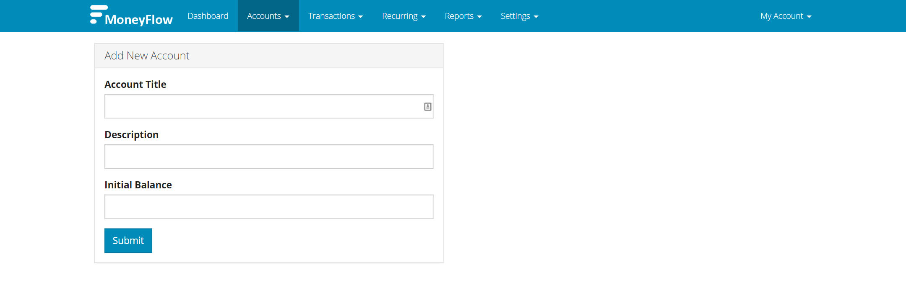
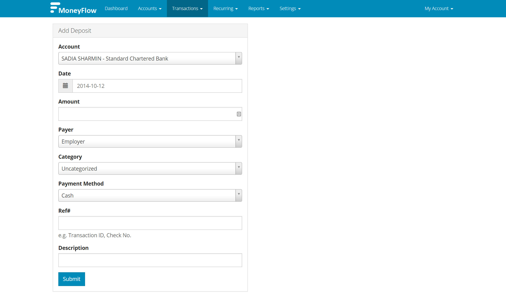
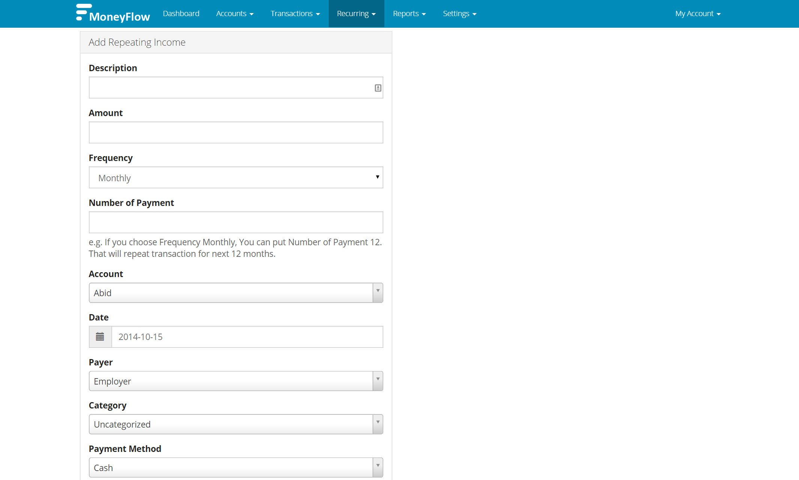
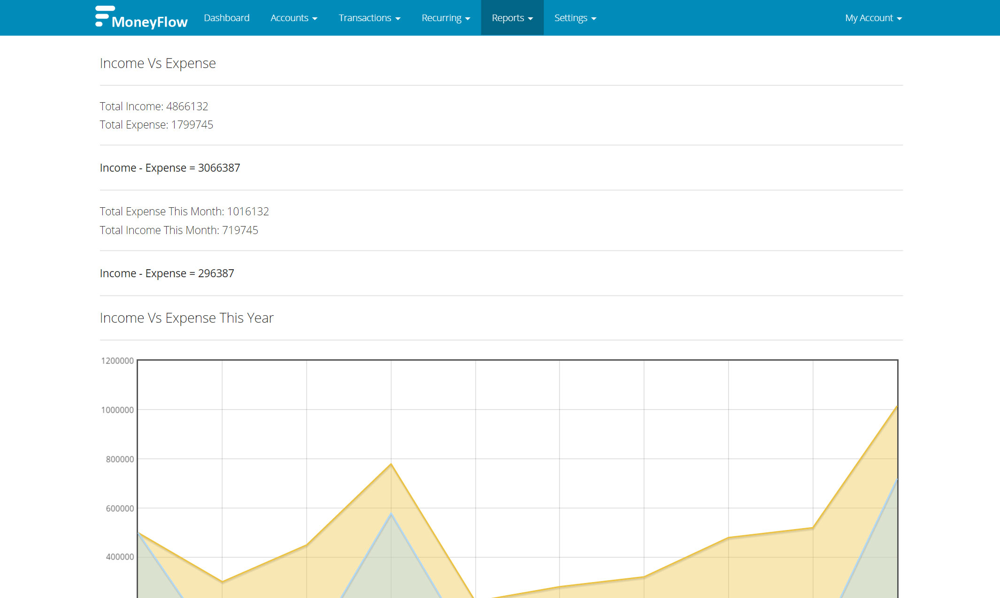
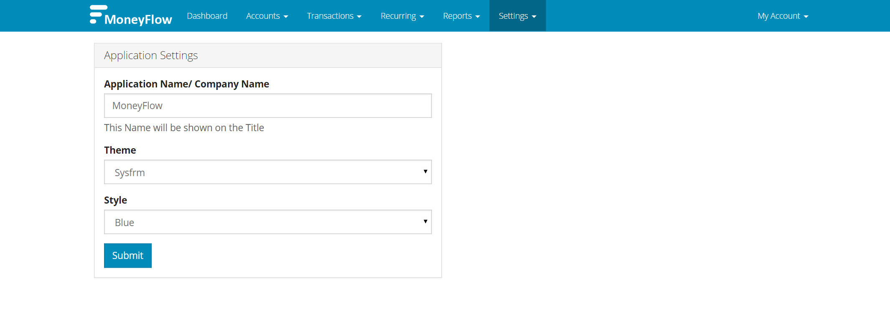
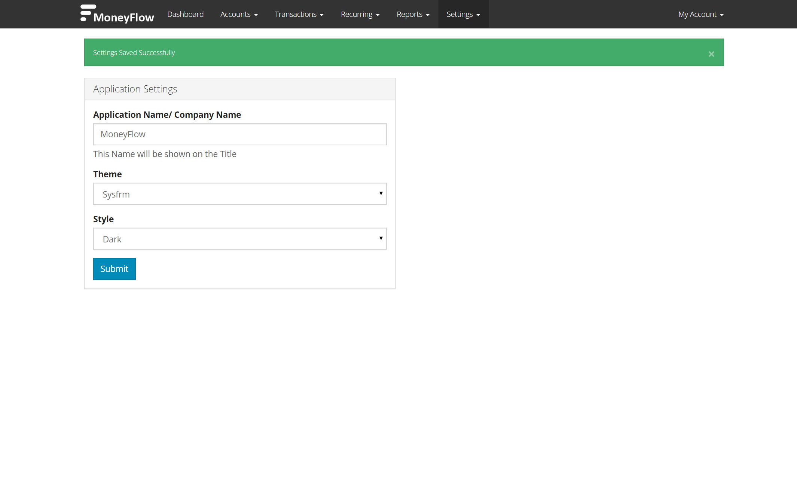

Documentation For MoneyFlow
If you have any questions that are beyond the scope of this help file, please email me - me@sadiasharmin.com
Author: SadiaSharmin
Created On: 14/10/2014
Email: sadiasharmin3139@gmail.com
Table of Contents: |
Most current web servers with PHP & MySQL installed will be capable of running MoneyFlow. Here is the system requirements to run moneyflow in your server-
-- PHP 5.3+
-- MySQL
-- Enabled PDO for MySQL
1. Unzip the contents of the zip file to a folder on your computer. You will find two folders, One folder contains documentation & another is moneyflow.
2. Upload the Entire moneyflow folder to your website / server
3. Next you can rename the folder to whatever you like (accounting, finance, manage etc..)
4. Now visit the uploaded location using your web browser to run the installer process.
5. Follow the instructions on screen to install moneyflow.
On Successful Installation, You will be able to login using - Username: admin & Password is- 123456 . Please change your Password after login.
6. For security, Delete the install directory inside sysfrm folder.
7. If you see blank page after installation, it might be your compiled folder permissoon is not writable. Please make permission 755 compiled directory inside ui folder to store the generated contents from theme.
To install manually, follow this steps-
1. Unzip the contents of the zip file to a folder on your computer. You will find two folders, One folder contains documentation & another is moneyflow.
2. Upload the Entire moneyflow folder to your website / server
3. Next you can rename the folder to whatever you like (accounting, finance, manage etc..)
4. Sample config file is available here- sysfrm/config.sample.php . Rename it to config.php & put it in same location (/sysfrm/config.php)
Open config file using a text editor & Put the database info and url.
5. Import database. Database file is located here- sysfrm/install/primary.sql
On Successful Installation, You will be able to login using - Username: admin & Password is- 123456 . Please change your Password after login.
6. For security, Delete the install directory inside sysfrm folder.
Before you start using moneyflow. Add your accounts, payees, payers, expense categories, income categories.
Some common categories already added for you. You can use it, modify it, or add new.
Accounts are how you keep track of your bank accounts/ cash accounts in MoneyFlow. By adding an account, you’ll be able to store and view information about your accounts, and track and analyse transaction history. You can also view total cash in all accounts, use in repeating transactions.
To create a new account, click Ad An Account Sub Menu under Accounts menu.
The Add New Account Form will look like this-

Account Title: Put a Name of your Bank / Cash Account. (e.g. XYZ Bank, Cash in Home etc. )
Description: Put a description of your account. (e.g. Your Account Number, Branch etc.)
Initial Balance: Put the amount of your current balance. (When you adding your account, you will have to put your current balance.
From next time, account balance will be calculated automatically based on your transactions.)
Under Transactions menu, you will be able to Add Deposit (Or Income), Add Expense. Account to Account Transfer. View All Transactions etc.
To add a entry of income transaction, click Ad Deposit Sub Menu under Transactions.
The Add Deposit Form will look like this-

Account: Choose the Account you are depositing.
Date: Date of the transaction
Amount: Amount of this transaction
Payer: The Payer of this income (e.g. Your employer, your client or somebody who is paying you. You can
modify payee from Settings -> Payee)
Category: The category of this transaction. (You can modify categories from Settings -> Income Categories
Payment Method: You can define payment methods here. (e.g. - Cash, Check, Paypal etc.)
Ref: You can add a referance of this transaction here. (e.g. - Check number, Transaction id etc.)
Description: Put description of this transaction.
Sameway, You will be able to add expense. To Add Expense, Go to Transactions -> Add Expense
Go to Transactions -> Transfer. With this you can transfer between accounts. For example you will use this when you are withdrawing fund from Bank Account and keeping it on Cash.
Under Recurring menu, you will be able to Add your regular income or expense.
To add a entry of repeating income, click Repeating Income Sub Menu under Recurring Menu.
The Add Repeating Income Form will look like this-

Description: Put description of this transaction.
Amount: Amount of this transaction
Frequency: Frequency of this transaction occurrence. (e.g. - Monthly, Yearly)
Number of Payment: If you choose Frequency Monthly, You can put Number of Payment 12. That will repeat transaction for next 12 months.
Account: Choose the Account you are depositing.
Date: Date of the transaction
Payer: The Payer of this income (e.g. Your employer, your client or somebody who is paying you. You can
modify payee from Settings -> Payee)
Category: The category of this transaction. (You can modify categories from Settings -> Income Categories
Payment Method: You can define payment methods here. (e.g. - Cash, Check, Paypal etc.)
Ref: You can add a referance of this transaction here. (e.g. - Check number, Transaction id etc.)
Sameway, You will be able to add Repeating expense.
The Application will generate following reports-
Account Statement: Account statement will be generated based on transactions in this account. To view statement, select the
account, date from, date to and click the Submit.
Reports by Date: This page will generate reports based on specific date. Here you will be able to see transactions made in this date.
Total Income in this date, Total Expense in this date.
Income Reports: Income Reports will be shown here.
Expense Reports: Expense Reports will be shown here.
Income Vs Expense Reports: A summary of Income & Expense will be shown here.
Here is an Example of generated reports-

To Access Other Settings Go To - Settings -> Application Settings.
The Form will look like this-

Application Name/ Company Name: You can chnage Application Name / Company Name from Here. This will be shown on your Application Title
Theme: Choose theme from here. Default theme is included. You can create additional theme and define this from here.
Style: You can choose the theme style from here. If you choose dark, the Application will look like this-

| Name | Description |
|---|---|
| Accounting | The systematic and comprehensive recording of financial transactions pertaining to a business. Accounting also refers to the process of summarizing, analyzing and reporting these transactions. The financial statements that summarize a large company's operations, financial position and cash flows over a particular period are a concise summary of hundreds of thousands of financial transactions it may have entered into over this period. |
| Transactions | An instance of buying or selling something. In this software you can add transaction for any event like - Income (deposit), Expense, Transfer between two accounts. |
| Income | Money received for work, service or through investments. |
| Expense | The cost incurred in or required for something. |
| Recurring / Repeating | Recur means occur again periodically or repeatedly. In this software, you can input all your future transactions for both income and expense. For example, let's say you are paying an amount every month to X provider for internet bill. So you can put this in Repeating Expense. It will be shown on your Expense calendar. |
| Payee | A person to whom money is paid or is to be paid. |
| Payer | A company or someone who pays a bill for products or services received |
Once again, thanks for purchasing MoneyFlow. I hope you will enjoy using this software. If you need any custom requirements, don't hesitate to contact with me
via my profile page- SadiaSharmin